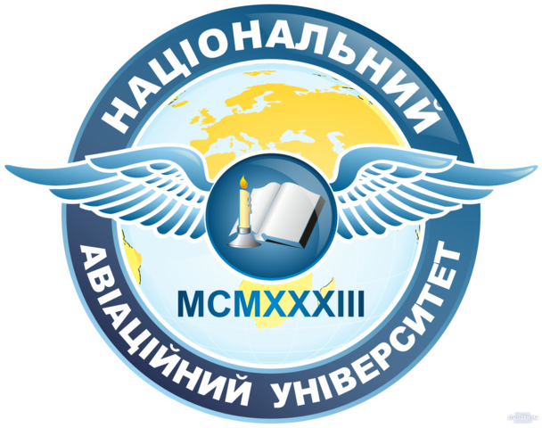

|  |
Національний авіаційний університет
Національний авіаційний університет — авіаційний заклад вищої освіти в Києві. В університеті навчається близько 25 тисяч
студентів із 55 країн світу. Потужні науково-педагогічні школи дають можливість готувати не лише фахівців інженерного профілю, але й економіс
тів, юристів, екологів, перекладачів, психологів, соціологів тощо. Навчальний процес забезпечує висококваліфікований науково-педагогічний колектив, у складі
якого 15 академіків та членів-кореспондентів НАН України, 184 докторів наук, професорів і 677 кандидатів наук, доцентів. До навчального процесу залучаються провідні сп
еціалісти авіакомпаній і промислових підприємств. Серед викладачів — 80 лауреатів Державної премії та Заслужених діячів науки і техніки.
|
|
Історія:
Витоки університету — в авіаційних курсах, організованих київськими політехніками на початку XX століття, а самостійна історія почалася в 1933 році: Постановою Ради Народних Комісарів СРСР № 1815 від
25.08.1933 і наказом Головного управління цивільного повітряного флоту СРСР № 454 від 26.08.1933 на базі Авіаційного факультету Київського машинобудівного інституту (КМБІ) був заснований Київський
авіаційний інститут (КАІ) (з 1934 р. — Київський авіаційний інститут ім. К. Є. Ворошилова).
Заняття в КАІ розпочались 15 вересня 1933 року в будівлі на вул. Леніна, 51 (тепер вулиця Богдана Хмельницького). В інституті були створені 4 факультети: загальнотехнічний, літакобудівний, моторобудівний,
експлуатаційний. В інституті був організований льотний загін, у якому студенти мали змогу набути, додатково до інженерної, льотну спеціальність. Парк літаків авіазагону складався із навчальних літаків У-
2 і літаків П-5. При загоні була планерна і парашутна секції.
У 1934 році в інституті створений Науково-дослідний сектор (НІС КАІ), яким впродовж 1934—1938 років було видано десять збірників наукових праць «Труды КАИ», в яких публікувались роботи вчених і студе
нтів інституту (за 1934–1938 роки у цих збірниках було опубліковано 24 наукові статті Володимира Челомея, тоді ще студента КАІ, а в майбутньому – Генерального конструктора ракетно-космічної техніки
СРСР). Членом редакційної комісії з підготовки до видання збірника «Труды КАИ» був Кравчук Михайло Пилипович – начальник кафедри математики КАІ (1933–1936), академік Всеукраїнської академії наук (ВУ
АН)ї.
У 1941 році через воєнні події діяльність КАІ була призупинена, інститут евакуйований, і тільки у 1947 році була відновлена його діяльність – створено Київський інститут цивільного повітряного
флоту ім К. Є. Ворошилова.
У подальшому його назва змінювалася:
- Київський інститут цивільного повітряного флоту (1962 рік)
- Київський інститут цивільної авіації (1964 рік)
- Київський інститут інженерів цивільної авіації (1965 рік)
- Київський інститут інженерів цивільної авіації ім. 60-річчя утворення СРСР (1982 рік)
- Київський міжнародний університет цивільної авіації (1994 рік)
- Національний авіаційний університет (2000 рік)
|
|
Структура:
У складі університету 10 факультетів, п'ять інститутів, шість фахових коледжів, ліцей, училище, кафедра військової
підготовки, Центр повітряного та космічного права, Європейські регіональні центри Міжнародної організації цивільної авіації (ІСАО).
Територія університету займає 72 га, загальна площа навчальних корпусів — 140 тис. м². У навчальному процесі використовуються 75 літаків та вертольотів, 42 авіаційні двигуни,
3 комплексні авіаційні тренажери, 240 бортових систем, моделюючих стендів, понад 6000 сучасних комп'ютерів. Студентське містечко університету це – 11 гуртожитків, їдальня на 1000 місць,
інтернет-кафе, студентське «Бістро», Авіаційний медичний центр, оснащений сучасним діагностично-лікувальним обладнанням, профілакторій, Центр культури і мистецтв із залом на 1500 місць,
навчально-спортивний оздоровчий центр.
Книжковий фонд науково-технічної бібліотеки НАУ становить понад 2,6 млн примірників. Університет має один з найбільших у світі
навчальних ангарів, навчальний аеродром, радіополігон та полігон авіаційної наземної техніки, тренажерні комплекси та навчально-науковий
аеродинамічний комплекс на базі дозвукової аеродинамічної труби ТАД-2.
|